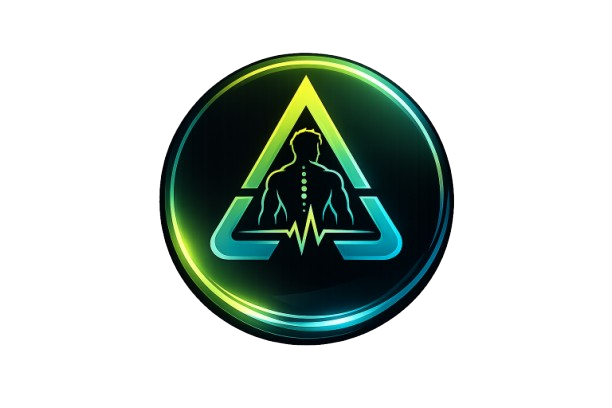

We built an operating system instead.
Unified Immutable Health Timeline Architecture
Auto-calculates +2.5kg compounds & +2.0kg isolations when top rep ranges are hit.
MacroFactor-style 14-day linear regression. Calibrates true expenditure from real weight & calorie deltas.
Conversational assistant that directly queries & mutates your health timeline via natural chat.

Stop logging your health. Start running it.